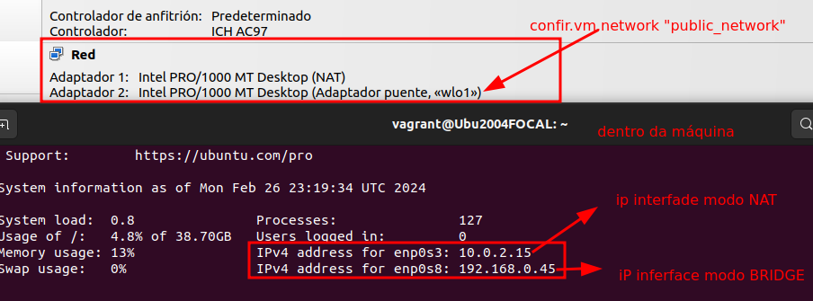
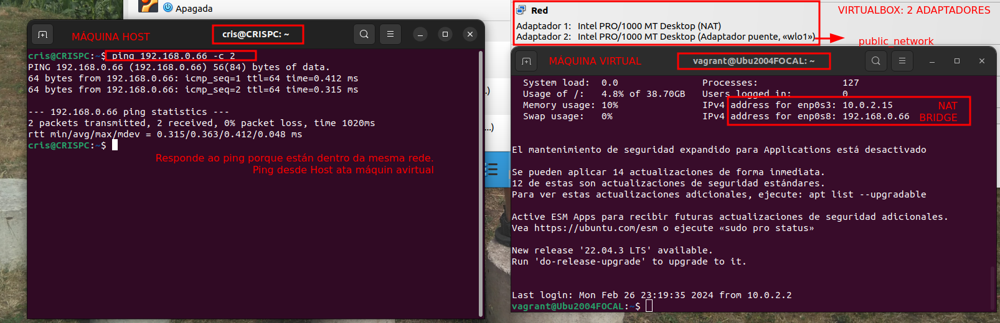

Para configurar unha rede de tipo Puente ou Bridge é dicir que a máquina virtual pase a formar parte da rede física da máquina Host:
config.vm.network "public_network"
Se na nosa rede local hai un servidor DHCP, este servidor asígnalle unha IP.
No meu caso vese que ten:

Se nos conectamos por ssh á máquina virtual, ou mediante o modo gráfico de VirtualBox, e facemos un ip a, podemos ver:
Engadiríamos no Vagrantfile unha liña como a que sigue.
config.vm.network "public_network", ip: "192.168.0.66"
OLLO!! Debemos asignar unha ip que pertenza á rede do host. No meu caso debe ser dentro da rede 192.168.0.0/24.
Eu asigneille a IP: 192.168.0.66 que pertence á subrede do host, para que poidan ter conectividade.
Como se pode ver a continuación, ao iniciar á máquina asigna: 
Logo vése na imaxe da esquerda, que ao facer ping desde o Host ao equipo virtual, hai conectividade.
Crea unha carpeta dentro da carpeta ~/vagrant, chamado "privatenetwork". Copia ahí o Vagrantfile onde se crea a rede privada.
Na MÁQUINA HOST, realiza:
ip a comproba as interfaces de rede que ten a túa máquina, e comproba, se hai algunha que pertenza á rede 192.168.33.0/24.Captura unha pantalla destas dúas evidencias.
Na pantalla de configuración de VIRTUALBOX comproba:
Accede á MÁQUINA VIRTUAL, por ssh ou desde a interface gráfica de VirtualBox.
$hostname na liña de comandos.$lsb_release -a e indica o sistema operativo do que se trata.$ip a e indica:
$ping 192.168.33.1 responde?Fai un debuxo a man ou nun programa de debuxo de redes (EdrawMax, yEd Graph Editor, ou outro que queiras) e debuxa a situación do teu HOST e a túa máquina VIRTUAL con todas as súas interfaces de rede.
--- Mais información: https://www.busindre.com/guia_rapida_de_vagrant